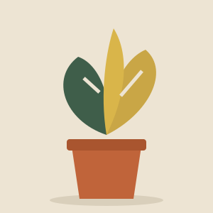
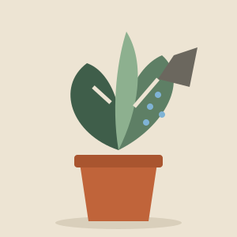
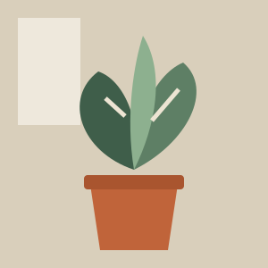
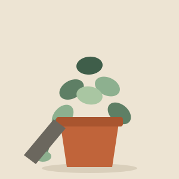

Plagas y enfermedadesHojas amarillas: 5 causas y cómo solucionarlas
5 min de lectura

Plagas y enfermedades5 min de lectura

Cuidados básicos4 min de lectura

Decoración con plantas3 min de lectura

Cuidados básicos4 min de lectura